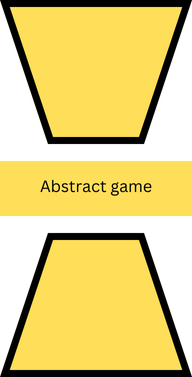
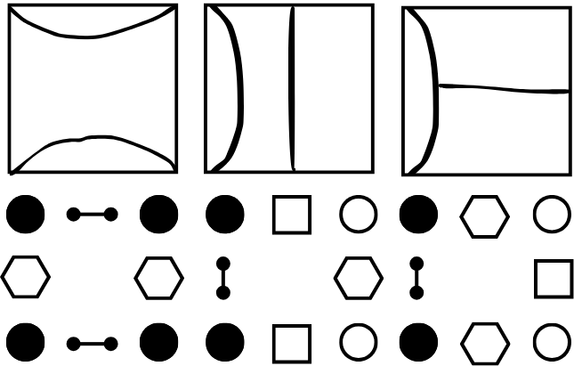
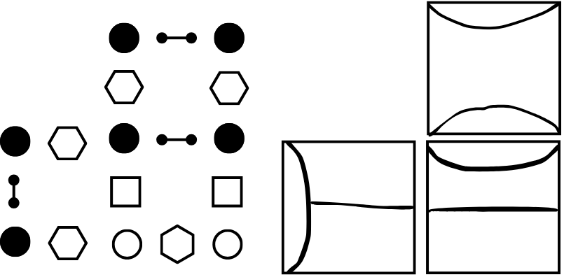

For Christmas, I gave my girlfriend the board game Carcassonne. In hindsight, it feels like I might have gifted it to myself just as much as to her—to enjoy together or share with friends and family during gatherings. I quickly grew fond of its simple rules and logical mechanics, and it made me think about game design, or more precisely, reverse engineering why a game like Carcassonne is fun. This post is my attempt to analyze the mechanics of a board game and explore what makes them enjoyable while also considering how these insights can inspire new designs.
The title I’ve considered, Autistic Analysis on Board Game Design, might be insensitive, but I chose it to reflect a methodical focus on the game’s mechanics rather than its social or interactive aspects. While much of a board game’s enjoyment comes from social interaction and other complex variables, my goal here is to distill the "fun" down to the core mechanics themselves.
Game Design as an Autoencoder

The game of Carcassonne inspires analysis of board game mechanics.
To approach this, I like to think of game design as an autoencoder. An autoencoder in machine learning reduces data to a compressed form, called a latent space, and then attempts to recreate the original data from it. This idea is analogous to isolating essential game mechanics and seeing how well the "core" recreates the gameplay experience. Similarly, I aim to describe the design choices of a game as an efficient coding system. By removing or restoring specific mechanics, I want to examine how each change alters the gameplay experience. This process highlights the mechanics that are essential to the game’s identity and offers inspiration for creating new games.
Analyzing the Mechanics
Let’s take Carcassonne as an example. There are multiple ways to code its mechanics, but the focus here is on the latent space—the minimal essence that makes the game engaging. I’ll describe one possible coding where we analyze and remove mechanics step by step, observing the resulting changes:
1. Immediate Scoring with Meeples
This mechanic involves placing meeples on tiles to score points when features (e.g., roads, cities, or farms) are completed, and then reclaiming the meeples. Without this mechanic, players collaborate to build a shared board. Meeples merely mark ownership without influencing scoring directly.
Without scoring, the gameplay emphasizes spatial optimization and risk-reward balance. Players might focus on closing incomplete features or enhancing their own future options. However, the removal of scoring mechanics reduces the pressure to make precise moves, shifting the game’s dynamic.
2. Blocking Opponents
Meeples also enable blocking strategies, preventing opponents from completing or scoring features. Removing this aspect eliminates direct competition, leaving only tile placement optimization. Players now focus on their own scoring opportunities without disrupting others.
The Latent Game
In the abstracted model, the essence of Carcassonne becomes an optimization problem: drawing a tile (graph T) and determining its best placement on the board (graph G). The puzzle element lies in maximizing rewards while navigating constraints, making each decision meaningful and engaging.

Mechanics like meeples and scoring contribute to Carcassonne's charm.

Viewing the board as a planar graph simplifies gameplay mechanics.
Insights and Applications
By examining Carcassonne through this lens, we uncover the core mechanics that drive its enjoyment. It's the interplay between tile placement, resource management, and competition that creates a dynamic experience. Understanding these elements allows us to iterate on existing designs or develop entirely new games inspired by similar principles.
In conclusion, reverse engineering a game like Carcassonne reveals the importance of balanced mechanics. By isolating and analyzing these components, we gain a deeper understanding of what makes board games enjoyable, offering a foundation for innovation. Or, we could strip away the thematic layers and explore the graph-theoretic optimization game at its core!